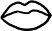

Ankara'da bir akşam vakti, yedisi üniversite öğrencisi sekiz yolcu taşıyan dolmuşun solgun çehreli şoförü, belki sırf içinden geldiğinden, belki de en son binen yolcudan buram buram yükselen alkol kokusuna binaen, dillendi aniden. "Yedi kat gökyüzü var tepemizde!" dedi, camdan fırlatılmaya hazırlanırcasına öne doğru uzattığı kafasını ağır ağır sallayarak. İğreti bir sessizlik oldu dolmuşun içinde. Sarı benizli şoförün, içerideki yolculara mı, yoksa dışarıdaki gökyüzüne mi hitap ettiğinin çözülemediği on, on beş saniye boyunca sürdü sessizlik. Ama onun kimseden onay bekler gibi bir hali yoktu zaten. Kapılıp kendi sesinin cezbesine, devam etti sözlerine: "Kat üstüne kat... sonra gene bi kat... gene bi kat..." Şimdi artık dolmuştakiler de birer birer uzatıp kafalarını, kendi camlarından göz kırpan eflatun gökyüzüne bakmaya başlamışlardı. Ne var ki, şoförün aniden ellerini direksiyondan çekip, cılız cüssesinden beklenmedik bir sesle gürlemesiyle, daldıkları kuytulardan çarçabuk döndü her biri: "Hani nasıl duruyor kat kat, tastamam yedi kat? Direk görüyor musunuz gençler? Direk mi var tepemizde?" Kırık dökük gülüşmeler yükseldi. Gündelik gaileleri bir an için de olsa geri püskürtmeye vesile olduğu için, küçümsemeyle tatlandırılmış bir sempatiyle süzüldü dolmuşun delisi. Şimdi tüm dikkatler ona çevrilmişti. Şikâyetçi göründüğü söylenemezdi onun da. Fortuna'nın kendisinden esirgediği ilgiyi bir parçacık dahi olsa birilerinden görmenin heyecanıyla aşka gelmişti âdeta; hem aşka hem de gaza. Mütemadiyen konuşuyor; ölçüsüz el kol hareketleriyle, bir yandan sözlerine destek yaparken, bir yandan da yaka paça camdan içeri sokmaya çalışıyordu semayı. O gayb âlemine, yolcular da onunkine takılmayı sürdürürken, yanı başımda oturan genç kadının, endişeden büyümüş gözlerle hâlâ ve ısrarla direksiyona bakmakta olduğunu fark ettim. Belki de muzip bir edayla atılıp "Gökyüzünü bilmem ama direksiyonu birileri tutsa iyi olur!" diye çıkışmasını bekledim. Ama o, oltanın ucunda bulduğu sonu tevekkülle yutmuş bir balık gibi sadece, öylesine ve üst üste birkaç kere açıp kapadı ağzını. Rujsuz dudakları en nihayetinde birbirine kavuştuğunda, boğuk kabarcıklardan başka bir şey çıkarmamışlardı.
Neyse ki, ana caddenin trafiğine dalınca, gökyüzüne uzanmayı bırakıp, tekrar direksiyonu kavradı şoförün elleri. Yarı minnettar gülümsedim küt parmaklara. Dönüp yanı başımdaki kadına baktım sonra. Rahatlamış görünmüyordu zerre kadar. Akışkan değil, yapışkan bir sıvı gibiydi endişe teninin üzerinde. İstese de çekip çıkaramazdı sanki, derisini de beraberinde sökmeden. Birkaç durak sonra da indi zaten. Hızlı adımlarla karıştı kaldırımın kalabalığına; tesellisiz gözlerini direksiz gökyüzüne bir kez bile çevirmeden.
* * *
Göklerin direksiz yaratıldığını nakleder semavi dinlerin anlatıları. Nakleder etmesine de, her okuyanda aynı tesiri bırakmaz bu sözler. Yedi kat gökyüzünün direksiz ama üst üste, desteksiz ama dengede durmayı başarmasını, kâinatın mucizevi nizamına kanıt olarak görmeye meyyaldir insanların çoğu. Ama işte kimileri de hayatın muntazamlığına değil, tekinsizliğine işaret sayar bu durumu. Ha düştü ha düşecek bir gökyüzünün altında yaşadıklarını düşünmekten alıkoyamazlar kendilerini. Onları yalancı çıkarmamak için olsa gerek, gökyüzü de kafalarına çöker sık sık. Hep son anda, sonlara ramak kala yükselip, ağırlığı altında ezilenlerin tekrar nefes almalarına izin vererek...
Gökyüzünün altında ikide bir haşat olan bu insanlar, endişe abideleri olarak değil, abidevi endişeler halinde dolaşırlar aramızda. Mütereddit ruhlardır onlar. Gösterilene değil, gösterilmeyene bakarlar. Batıl inançların sadık takipçileri de onlardır gene. İtikat ile itikatsızlık arasında gidip gelir yüreklerinin sarkacı. Hiçbir gerçek mutlak surette inanılacak kadar kesin değildir; hiçbir sığınak yeterince korunaklı değil. Sallanan çocuk dişleri gibidir hayatla bağlantıları. Yaşlanmadan ölen çocuk dişleri gibi salınırlar direksiz-direksiyonsuz boşluklarda. Sanılanın aksine, ayaklarının altındaki zemin değil, başlarının üzerindeki göklerdir fütursuzca alçalıp yükselen; tekinsiz bir devinimle biteviye dalgalanan. "Hamlet'ten etkilenmiş mütereddit bir ruh asla başkalarının zararına yol açmamıştır" der Cioran. Çünkü onlar, hasarların en büyüğünü gene kendilerine verirler.
Etrafınıza bir bakın. Karınıza, yeni sevgilinize, kırk yıllık kapı komşunuza, oğlunuza ya da çalışma arkadaşlarınıza... Nerede duracağını kestiremeden savrulan bir mütereddit ruh konmuş olabilir çok yakınınıza. Eğer öyleyse, eğer ertesi sabah uyandığınızda hâlâ sizinle birlikteyse, fazla söze ne hacet. Sormayın. Yanınızda olduğu müddetçe buradadır; gittiğindeyse, ardında endişeye bulanmış ayak izleri bırakır sadece. Ama siz siz olun, mütereddit ruhları, gökyüzünün direkleri olduğunu söyleyerek teselli etmeye kalkmayın. Nizamın çıtaları umurlarında bile değildir. Çünkü her zelzelede zangır zangır sarsılıp, parça parça ayrılan, altında yaşadıkları gökkubbenin kallavi direkleri değil, göğüs kafeslerinde taşıdıkları pır pır yüreklerin incecik temelleridir.
Boston